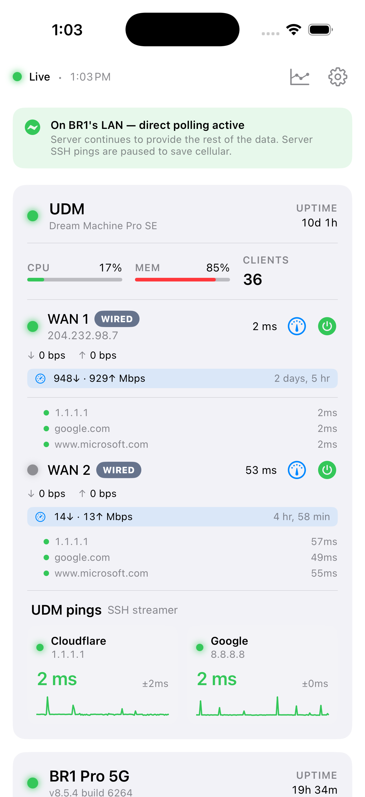

NetMon
Live view of your home + mobile network, on every screen.
A Mac menu-bar app that polls your routers and ping targets every few seconds, and pairs with an iOS app over your LAN via QR code. No cloud, no accounts, no telemetry.

Requires macOS 14 or later · Signed & notarized · Free and open source
Install in 3 steps
-
1
Open the DMG
Double-click
NetMonServer.dmgand drag NetMon Server into your Applications folder. -
2
Launch from Applications
Open NetMon Server. It runs in the menu bar — click its icon to open the setup window.
-
3
Pair your iPhone
Install the iOS app, tap Scan QR, and point it at the QR code in NetMon Server's setup window. Pairing stays on your LAN.
Get the iOS app
NetMon's iPhone and iPad app is distributed through TestFlight while we finalize the App Store release.
What it monitors
- UniFi Dream Machine (UDM / UDM-Pro / UDM-SE)
- Peplink routers — Balance, BR1 Pro, MAX Transit, and other SpeedFusion gear
- InControl 2 cloud (optional OAuth, read-only)
- Any ICMP host — custom ping targets with per-target thresholds
Not a Mac user?
A Linux / Docker port is tracked in GitHub issues but isn't shipping yet. The macOS menu-bar app is the only supported server today.
FAQ
- Does NetMon send anything to me or Anthropic?
- No. NetMon runs entirely on your hardware. There is no telemetry, no analytics, and no remote server.
- What credentials does it need?
- Local admin credentials for your router (UniFi, Peplink, etc.), stored in the macOS Keychain. InControl 2 cloud polling is optional and uses OAuth.
- Does it cost anything?
- No for personal use. NetMon is source-available under PolyForm Noncommercial 1.0.0 — read, modify, and run it for yourself. Commercial or paid-service use requires a separate license. The iOS app is free on the App Store.
- Where do I get support?
- Open an issue on GitHub. This is a hobby project — response times vary but every report gets read.